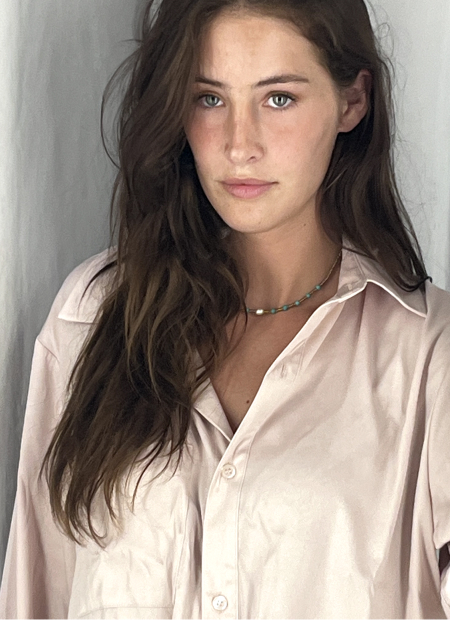
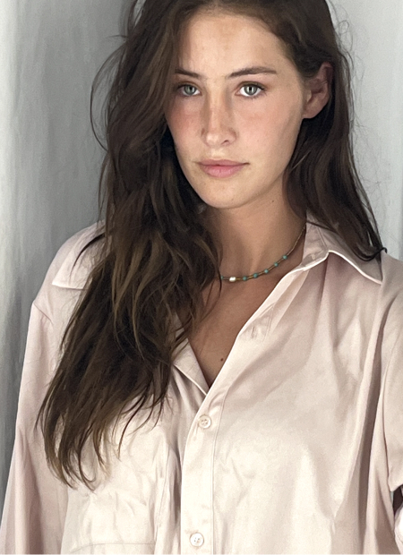

About the Logo
This design represents my twin sister and I, portrayed as a stingray (me) and a mermaid (my sister). While brainstorming ideas for how to represent us, my thoughts kept leading me back towards a stingray. I couldn't figure out why, but then it struck me- my very first childhood doll was named Stingray. I then asked my sister: If you could be an underwater animal, what would you be? She then replied with the utmost casualty:
A Mermaid.The figures are loosely encapsulated by a circle, to represent totality and togetherness. Having a twin is like an extension of yourself, a bond which is unbreakable. Just like a circle.